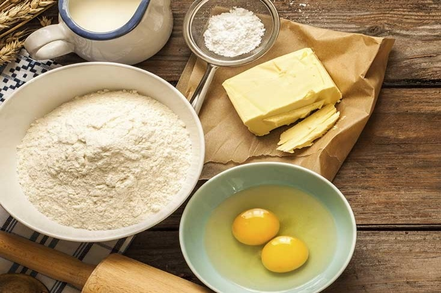

<div class="container">
  <div class="row">
    <div class="col-md-2"></div>
    <div class="col-md-8">
      <div *ngIf="recipe && recipe.name">
        <div class="card">
          <a class="img-card" routerLink="/recipes/browse/{{recipe.$key}}">
            
            
          </a>
          <div class="card-content">
            <h4 class="card-title">
              <a>{{recipe.name}}</a>
            </h4>
            <table class="table table-bordered">
              <tbody>
                <tr *ngIf="recipe.servings">
                  <td colspan="3"><b>Author:</b>&nbsp;{{recipe.author.displayName}}</td>
                </tr>
                <tr>
                  <td *ngIf="recipe.servings"><i class="fa fa-users" aria-hidden="true"></i>&nbsp;{{recipe.servings}}</td>
                  <td *ngIf="recipe.preparationTime"><i class="fa fa-clock-o" aria-hidden="true"></i>&nbsp;{{recipe.preparationTime}} min</td>
                  <td *ngIf="recipe.cookingTime"><i class="fa fa-free-code-camp" aria-hidden="true"></i>&nbsp;{{recipe.cookingTime}} min</td>
                </tr>
                <tr>
                    <td><i class="fa fa-calendar" aria-hidden="true"></i>{{recipe.dateCreated | dateify}}</td>
                    <td><i class="fa fa-cloud-upload" aria-hidden="true"></i>{{recipe.dateUpdated | dateify}}</td>
                    <td><i class="fa fa-heart" aria-hidden="true"></i>&nbsp;</td>
                  </tr>  
              </tbody>
            </table>
            <div id="description">
                <p><b>DESCRIPTION:</b></p>
                <p>{{recipe.description}}</p>
            </div>
            <button id="like-btn" class="btn rounded-circle" (click)="likeRecipe()">
                {{recipe.likes?.length || 0}}&nbsp;<i class="fa fa-heart" aria-hidden="true"></i>
            </button>
            <br/>
            <ng-container *ngIf="authService.isLoggedIn() && user && user.uid === recipe.authorUid">
              <div class="text-right">
                <a class="delete-recipe" (click)="removeRecipe()"><small>DELETE RECIPE</small></a>
              </div>
            </ng-container>
            <hr>
            <div class="comments">
                <div *ngFor="let comment of recipe.comments">
                    <app-comment [comment]="comment" [uid]="user?.uid" (commentRemoved)="removeComment($event)"></app-comment>
                </div>
                <div *ngIf="authService.isLoggedIn()">
                    <app-create-comment [user]="user" (commentSubmitted)="createComment($event)"></app-create-comment>
                </div>
            </div>
          </div>
        </div>
      </div>

      <div class="not-found" *ngIf="notFound">
        Recipe not found!
        </div>
    </div>
    <div class="col-md-2"></div>
  </div>
</div>
